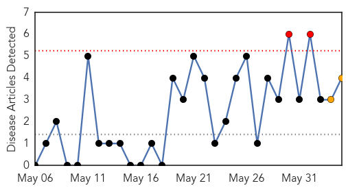
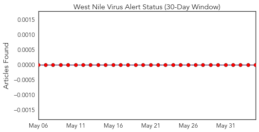
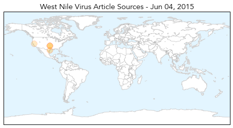
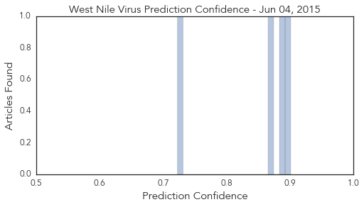
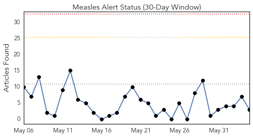
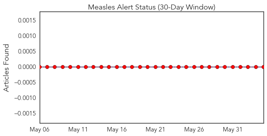
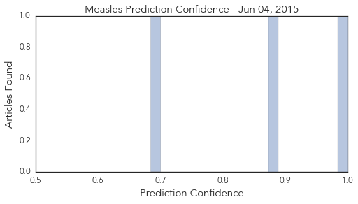

West Nile Virus
30-Day Web Trend
2 alerts, 2 warnings

30-Day Twitter Trend
0 alerts, 0 warnings

Article Locations
Article Confidences
Top Articles:
- 0.901
- West Nile found in people in Oklahoma counties
- 0.886
- 1st cases of West Nile virus in Oklahoma this year confirmed in Okfuskee, McIntosh counties
- 0.871
- Contaminated water, mosquitos cause for concern after flooding
- 0.723
- Rapid Large-Scale Deployment of Tuberculosis Testing in a High School — Riverside County, California, 2013–2014
Top Tweets:
-
No tweets found for Jun 04, 2015
Measles
30-Day Web Trend
0 alerts, 0 warnings

30-Day Twitter Trend
0 alerts, 0 warnings

Article Locations

Article Confidences
Top Articles:
Top Tweets:
-
No tweets found for Jun 04, 2015